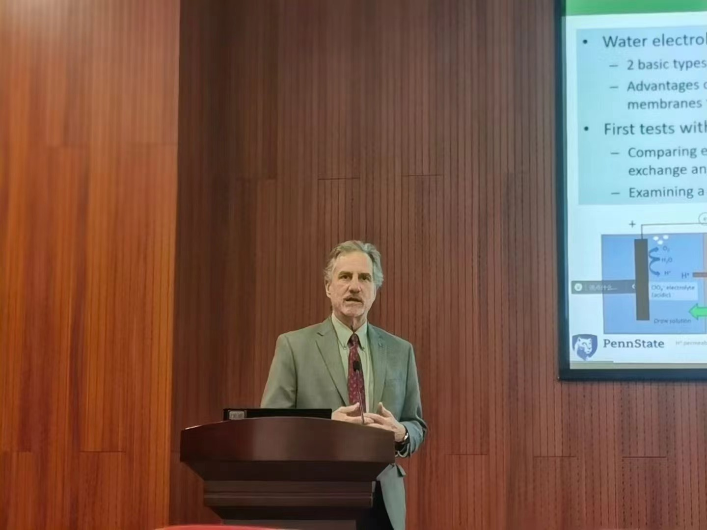
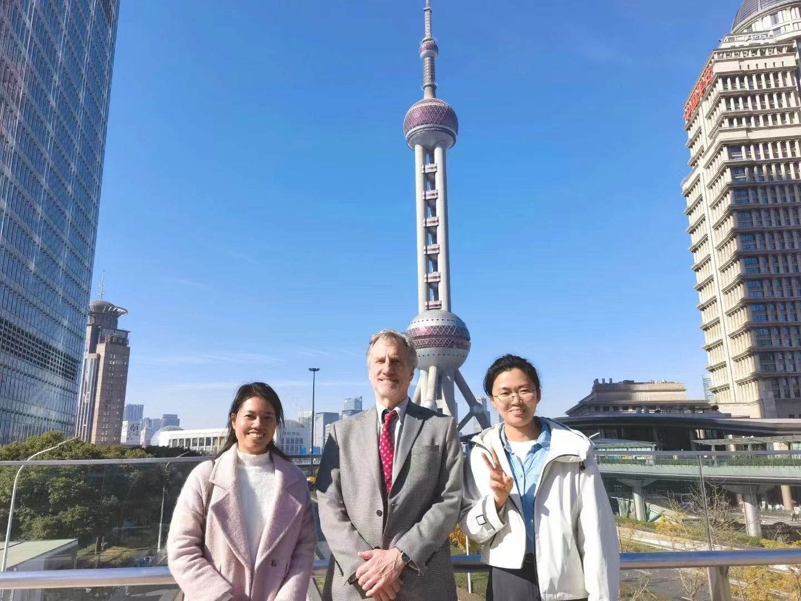

2024.03 Congratulations to the master's student Sun Yuchen on her first-author paper "Water Recovery from Wastewater by Hydrogels" being accepted by Environmental Science & Technology Letters
2024.02 Congratulations to the master's student Dong Xiuting on her first-author paper "Microbial Water Electrolysis Cells for Efficient Wastewater Treatment and H2 Production" being accepted by ACS Sustainable Chemisrty & Engineering
2023.12 A warm welcome to Academician Bruce Logan for visiting our research group!!!


2023.11 Prof. Zhu attended the 12th National Conference on Environmental Chemistry and was invited to give an oral presentation.
2023.09 Welcome Fan Pan and Zhang Junyao to join the research group as master's students!
2023.08 Prof.Zhu attended the 2023 ACS Fall Meeting and delivered an oral presentation.
2023.02 Welcome Zhang Meng to join the research group as a research assistant!
2022.09 Welcome Tian Zhichao to join the research group as a research assistant!
2022.09 Welcome Pang Dianyu and Huang Leying to join the research group as master's students!
2022.09 Congratulations to Prof. Zhu for receiving support from the National Natural Science Foundation of China for the general program!!!
2022.08 Congratulations to Prof. Zhu for winning the Gold Award of the "The 5th Young Scientist Award of the Chinese Society for Environmental Sciences"!!!

2022.07 Prof. Zhu attended the 11th National Conference on Environmental Chemistry and was invited to give an oral presentation.
2022.02 Welcome Dr. Fei Jingyuan to join the research group as a postdoctoral fellow!
2021.10 Welcome Huang Taobo to join the research group as a research assistant!
2021.09 Welcome Sun Yuchen to join the research group as a master's student!
2021.09 Welcome Dong Xiuting 【the creator of this webpage ：）】 to join the research group as a master's student!
2021.09 Prof. Zhu Xiuping joined Fudan University as a "Youth Thousand Talents" and established a laboratory!